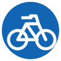
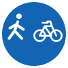
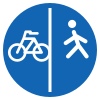
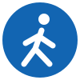
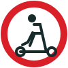

Выбираем маршрут
Урок 2 из 5
Сначала разберёмся, кто идёт рядом с нами и как отличить разные части дороги.
Кто такой пешеход
По пункту 1.2 ПДД пешеход — человек, который находится вне транспортного средства на дороге, пешеходной или велопешеходной дорожке и не выполняет там работу. К пешеходам приравнивают людей, передвигающихся в инвалидной коляске, ведущих СИМ, велосипед, мопед или мотоцикл, везущих санки, тележку, детскую или инвалидную коляску, а также тех, кто передвигается на роликах, обычном самокате без двигателя и подобных устройствах.
Пока вы едете на электросамокате, вы пользуетесь СИМ. Спешились и ведёте его рядом — вы пешеход.
Как различить участки дороги
Проезжая часть предназначена для движения безрельсовых транспортных средств. Обочина примыкает непосредственно к ней и отличается покрытием или выделена разметкой. Тротуар предназначен для пешеходов и примыкает к проезжей части или велодорожке либо отделён от них газоном.
Велодорожка отделена от проезжей части и тротуара или идёт самостоятельно. Велополоса — часть проезжей части, выделенная разметкой. Велопешеходная дорожка бывает общей или разделённой на две стороны. На схеме подпишите эти участки перед выбором маршрута.
Вы готовы к поездке. До секции можно добраться двумя способами. Один путь длиннее, зато почти весь проходит по дорожкам. Второй короче, но часть пути проходит по обочине. Чтобы решить, какой выбрать, сначала выясните, где вам разрешено ехать с учётом возраста и устройства.
Какие места разрешены
В ПДД возрастные группы сформулированы так.
- Младше 7 лет. Только в сопровождении взрослых. Ехать можно по тротуарам, пешеходным дорожкам, по стороне велопешеходной дорожки для пешеходов и в пределах пешеходных зон.
- От 7 до 14 лет. Ехать можно только по тротуарам, пешеходным, велосипедным и велопешеходным дорожкам и в пределах пешеходных зон.
- Старше 14 лет. Основной путь — по велосипедной или велопешеходной дорожке, полосе для велосипедистов или проезжей части велосипедной зоны. Для остальных участков действуют условия ниже.
Когда можно ехать по тротуару и вдоль дороги
Для тех, кто старше 14 лет, в пешеходной зоне разрешено ехать на СИМ массой до 35 кг включительно. На тротуаре и пешеходной дорожке действует тот же предел массы. Дополнительно должно выполняться одно из условий.
Велосипедной и велопешеходной дорожек и велополосы нет или по ним невозможно ехать. Либо вы сопровождаете ребёнка до 14 лет, который едет на СИМ или велосипеде.
Обочину можно использовать, если велодорожек, велополосы, тротуара и пешеходной дорожки нет или по ним невозможно проехать. На правый край проезжей части можно выехать, когда нет доступной обочины и всех этих путей.
При этом дорога должна допускать движение велосипедов, а разрешённая скорость транспорта на ней — не выше 60 км/ч. На СИМ должны быть тормозная система, звуковой сигнал, белая фара спереди и световозвращатели. Спереди они белые, сбоку оранжевые или красные, сзади красные.
По правому краю едут в один ряд. Обгонять или объезжать транспорт слева на СИМ нельзя.
Дорожные знаки на маршруте

Велосипедная дорожка
4.4.1 «Велосипедная дорожка». Синий круг с белым велосипедом. По этой дорожке можно ехать на СИМ с учётом возрастных условий выше.
Ваше действиеДвигайтесь по дорожке, если она разрешена для вашего возраста. В конце участка проверьте путь дальше.

Велопешеходная дорожка с совмещённым движением
4.5.2 «Велопешеходная дорожка с совмещённым движением». На синем круге человек и велосипед без разделительной линии. Пешеходы и те, кто едет, пользуются общим пространством. У пешеходов приоритет.
Ваше действиеУчитывайте пешеходов в общем пространстве. Заранее замедляйтесь и оставляйте место.

Велопешеходная дорожка с разделением движения
4.5.4 и 4.5.5 «Велопешеходная дорожка с разделением движения». На синем круге человек и велосипед разделены вертикальной линией. Смотрите, с какой стороны нарисован велосипед, и сверяйтесь с разметкой. Для поездки на СИМ выбирайте велосипедную сторону, если возраст позволяет. Для детей младше 7 лет действует правило из п. 24.4: на такой дорожке они едут со взрослым по стороне для пешеходов.
Ваше действиеВыберите соответствующую сторону дорожки. Для детей младше 7 лет — пешеходная сторона со взрослым.

Пешеходная дорожка
4.5.1 «Пешеходная дорожка». Синий круг с белой фигурой человека. Здесь можно идти пешком. Поездка на СИМ допускается в случаях, предусмотренных ПДД. Сверьтесь с возрастом, массой устройства и условиями маршрута, описанными выше.
Ваше действиеПроверьте условия движения на СИМ. Не мешайте пешеходам.
Въезд запрещён
3.1 «Въезд запрещён», или «кирпич». Красный круг с белым прямоугольником. На СИМ нельзя въезжать под этот знак со стороны, с которой он установлен.
Ваше действиеНе въезжайте на СИМ со стороны установки знака.

Движение на СИМ запрещено
3.35 «Движение на СИМ запрещено». Белый круг с красной каймой и изображением человека на СИМ. Проехать этот участок на СИМ нельзя. Если дальше ехать нельзя, остановитесь и выберите другой разрешённый путь.
Там, где можно идти пешком, можно спешиться и вести устройство рядом — в этом случае вы пешеход. Когда разрешённых маршрутов несколько, выбирайте тот, где лучше обзор и меньше пересечений с машинами.
Ваше действиеНе продолжайте поездку через запрещённый участок. Выберите разрешённый путь.
Выбираем путь
Выберите действие. После ответа появится объяснение; ошибку можно исправить.
Все ситуации разобраны
Можно перейти дальше или повторить задание.
Сначала разберите ситуации выше. Отметка не подтверждает навык управления.